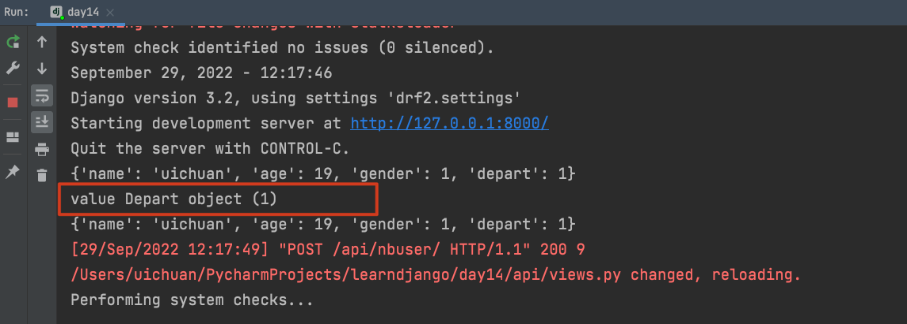
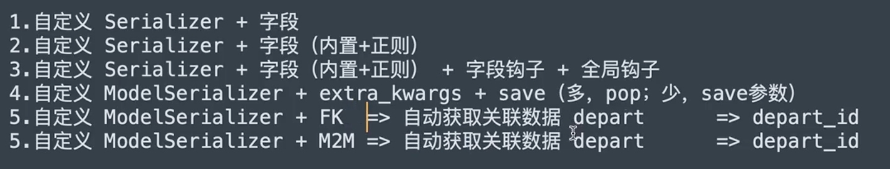

8.restframework数据校验
这篇随笔针对于应用，将会有很多实例代码片段，源码肝不动了，需要缓缓🎈
1.内置校验（基于Serializer）
from rest_framework.views import APIView
from rest_framework.response import Response
from rest_framework import serializers
class InfoSerializer(serializers.Serializer):
title = serializers.CharField(required=True, max_length=20, min_length=6)
order = serializers.IntegerField(required=False, max_value=100, min_value=10)
level = serializers.ChoiceField(choices=[("1", "高级"), (2, "中级")])
class InfoView(APIView):
def post(self, request):
ser = InfoSerializer(data=request.data)
if ser.is_valid():
return Response(ser.validated_data)
else:
return Response(ser.errors)
对于内置校验
基于serializer类的serializer字段后添加参数
- required
- max_length
- min_length
- choices=[("1", "xx"), (2, "xxx")]
- validators=[xxvalidator(message="xxx校验错误")]
- validators=[EmailValidator(message="邮箱格式错误")]
2.正则校验
使用正则表达式校验
from django.core.validators import RegexValidator
使用django内置的正则表达式校验类来实现
class InfoSerializer(serializers.Serializer):
more = serializers.CharField(validators=[RegexValidator(r"\d+", message="格式错误")])
3.钩子校验
基于serializer的钩子方法进行校验
例如：对code字段进行校验
from rest_framework.views import APIView
from rest_framework.response import Response
from rest_framework import serializers
from rest_framework import exceptions
class InfoSerializer(serializers.Serializer):
title = serializers.CharField(required=True, max_length=20, min_length=6)
order = serializers.IntegerField(required=False, max_value=100, min_value=10)
code = serializers.CharField()
def validate_code(self, value):
print(value)
if len(value) > 6:
raise exceptions.ValidationError("字段钩子校验失败")
return value
def validate(self, attrs):
print("validate=", attrs)
# api_settings.NON_FIELD_ERRORS_KEY
# raise exceptions.ValidationError("全局钩子校验失败")
return attrs
钩子方法validate_code传入两个固定参数，第二个参数固定名称为value,就是请求中该字段的值
如果校验不通过，通过raise exceptions.ValidationError("字段钩子校验失败")抛出异常
抛出的异常信息可以自定义，支持Json格式返回异常{"status":False,"detail":"this field is invalid"}
def validate_code(self, value):
print(value)
if len(value) > 6:
context = {
"status":False,
"detail":"this field is invalid"
}
raise exceptions.ValidationError(context)
return value
全局钩子方法validate会在所有钩子方法校验之外执行，进行全局校验
如果校验不通过，主动抛出异常raise exceptions.ValidationError("全局钩子校验失败")
4.Model校验（基于ModelSerializer）
from rest_framework.views import APIView
from rest_framework.response import Response
from rest_framework import serializers
from rest_framework import exceptions
from api import models
from django.core.validators import RegexValidator
class RoleSerializer(serializer.ModelSerializer):
more = serializers.CharField(required=True)
class Meta:
model = models.Role
fields = ["title", "order", "more"]
extra_kwargs = {
"title": {"validators": [RegexValidator(r"\d+", message="格式错误")]},
"order": {"min_value": 5},
}
def validate_more(self, value):
return value
def validate(self, attrs):
return attrs
在ModelSerializer中的校验条件，写在Meta类的extra_kwargs中,以键值对的方式对每个字段添加校验的条件
字典的嵌套
extra_kwargs = {
"title": {"validators": [RegexValidator(r"\d+", message="格式错误")]},
"order": {"min_value": 5},
}
5.基于ModelSerializer校验和保存 （FK）
class InfoModelSerializer(serializers.ModelSerializer):
class Meta:
model = models.UserInfo
fields = ["name", "age", "gender", "depart"]
def validate_depart(self, value):
print("value",value)
return value
class InfoView(APIView):
def post(self, request):
print(request.data)
ser = InfoModelSerializer(data=request.data)
if ser.is_valid():
ser.save()
print(ser.data)
# return Response(ser.data)
else:
print(ser.errors)
return Response("suucess")
对于字段中有外键的情况，在前端发送post请求时，应该传入外键的那张表id
但是如果用钩子方法对字段进行校验，钩子方法所拿到的外键，则是外键对应表的对象

得到的是Depart object对象

拿到对象的话就可以取到对象中的所有成员，做更多的判断和校验了，甚好🎈
例如：
class InfoModelSerializer(serializers.ModelSerializer):
class Meta:
model = models.UserInfo
fields = ["name", "age", "gender", "depart"]
def validate_depart(self, value):
print("value", value)
if value.id > 1:
return value
raise exceptions.ValidationError({"status":False,"detail":"部门id错误"})
6. 序列化总结

7.同时校验和序列化
ser.save() 的返回值，在执行序列化器的save之后，会得到该方法的返回值 ，
返回值是当前创建的对象xxObject
可以这样理解
instance = ser.save()
在此，希望再进行一次序列化的操作，将准备写入数据库的新数据再次返回给前端API
7.1 使用两个序列化器类
使用两个序列化器类，一个用作数据校验，一个用作数据序列化
class InfoModelSerializer(serializers.ModelSerializer):
class Meta:
model = models.Depart
fields = "__all__"
class InfoModelSerializer2(serializers.ModelSerializer):
class Meta:
model = models.Depart
fields = ["id", "title"]
class InfoView(APIView):
def post(self, request, *args, **kwargs):
ser = InfoModelSerializer(data=request.data)
if ser.is_valid():
instance = ser.save()
print(instance)
ser2 = InfoModelSerializer2(instance=instance)
return Response(ser2.data)
else:
print(ser.errors)
return Response("fail")
其中InfoModelSerializer用来做数据校验，校验所有的字段__all__，
InfoModelSerializer2用来做序列化，fields = ["id", "title"]用来控制输出哪些字段
个人认为这是一种清晰的方式
7.2 一个序列化器同时完成校验和序列化
serializers字段的read_only和write_only参数
- read_only只有在序列化的时候才会使用
- write_only只有在数据校验的时候才会使用
例子：
对于id字段，用户（前端API）在传入的时候并不会传入这个字段，
这个字段是数据填入数据库之后，数据库自动生成的
但是我们通常希望在序列化返回数据的时候携带id这个参数
class InfoModelSerializer(serializers.ModelSerializer):
class Meta:
model = models.Depart
fields = ["id", "title", "order", "count"]
extra_kwargs = {
"id": {"read_only": True}
}
class InfoView(APIView):
def post(self, request, *args, **kwargs):
ser = InfoModelSerializer(data=request.data)
if ser.is_valid():
instance = ser.save()
print(instance)
ser2 = InfoModelSerializer(instance=instance)
return Response(ser2.data)
else:
print(ser.errors)
return Response("fail")
在这里添加了"id": {"read_only": True}在extra_kwargs中
在postman中的测试，传入3个数据，得到的数据中包括id

另一个控制的例子
class UsModelSerializer(serializer.ModelSerializer):
gender_info = serializer.Charfield(source="get_gender_display",read_only=True)
class Meta:
model=models.UserInfo
fields = ["id","name","age","gender","depart","gender_info"]
extra_kwargs={
"id":{"read_only":True},
"gender":{"write_only":True}
}
7.3 基于钩子进行控制
class UsModelSerializer(serializer.ModelSerializer):
v1 = seriaizer.SerializerMethodField()
class Meta:
model=models.UserInfo
fields = ["id","name","age","gender","depart","gender_info","v1"]
extra_kwargs={
"id":{"read_only":True},
"gender":{"write_only":True}
}
def get_v1(self,obj):
return {"id":obj.gender,"text":obj.get_gender_display}
8.通过一个字段做一些神奇的事儿
重写钩子方法的加载流程（精髓）
视图函数中
from api.ext.hook import NbHookSerializer
class SbModelSerializer(NbHookSerializer, serializers.ModelSerializer):
class Meta:
model = models.NbUserInfo
fields = ["id", "name", "age", "gender"]
extra_kwargs = {
"id": {"read_only": True}
}
def nb_gender(self, obj):
return obj.get_gender_display()
def nb_name(self, obj):
return obj.get_gender_display()
class SbView(APIView):
def post(self, request, *args, **kwargs):
print(request.data)
ser = SbModelSerializer(data=request.data)
if ser.is_valid():
ser.save()
return Response(ser.data)
else:
return Response(ser.errors)
新建一个工具hook.py
.
├── __pycache__
│ └── hook.cpython-310.pyc
└── hook.py
from collections import OrderedDict
from rest_framework.fields import SkipField
from rest_framework.relations import PKOnlyObject
class NbHookSerializer(object):
def to_representation(self, instance):
ret = OrderedDict()
fields = self._readable_fields
for field in fields:
if hasattr(self, 'nb_%s' % field.field_name):
value = getattr(self, 'nb_%s' % field.field_name)(instance)
ret[field.field_name] = value
else:
try:
attribute = field.get_attribute(instance)
except SkipField:
continue
check_for_none = attribute.pk if isinstance(attribute, PKOnlyObject) else attribute
if check_for_none is None:
ret[field.field_name] = None
else:
ret[field.field_name] = field.to_representation(attribute)
return ret
models.py
class NbUserInfo(models.Model):
name = models.CharField(verbose_name="姓名", max_length=32)
age = models.IntegerField(verbose_name="年龄")
gender_choices = ((1, "男"), (2, "女"))
gender = models.SmallIntegerField(verbose_name="性别", choices=gender_choices)